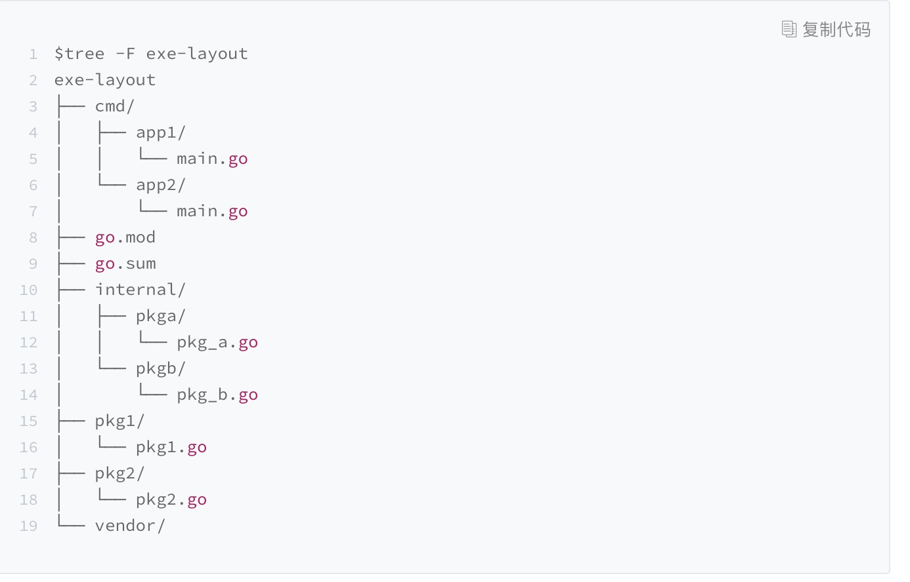
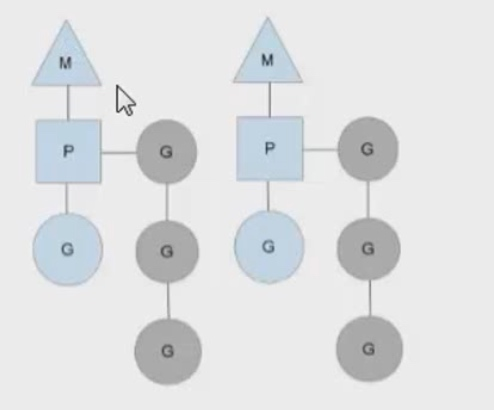

常量创新
无类型常量
隐式转换
枚举
略过一些值
// $GOROOT/src/syscall/net_js.go
const (
_ = iota
IPV6_V6ONLY // 1
SOMAXCONN // 2
SO_ERROR // 3
)
不连续
const (
_ = iota // 0
Pin1
Pin2
Pin3
_
Pin5 // 5
)

生命的意义是成为你自己！
// $GOROOT/src/syscall/net_js.go
const (
_ = iota
IPV6_V6ONLY // 1
SOMAXCONN // 2
SO_ERROR // 3
)
const (
_ = iota // 0
Pin1
Pin2
Pin3
_
Pin5 // 5
)

type Animal interface {
ScientificName() string
Category() string
}
type Pet interface {
Animal
Name() string
}
reflect.TypeOf(pet).String() //判断类型
interface{}(pet).(Dog) //转型
type InterfaceStructure struct {
pt uintptr // 到值类型的指针
pv uintptr // 到值内容的指针
}
type RedisError string
Error() string { return "Redis Error: " + string(err) }
package main
import (
// "fmt"
)
type PathError struct {
Op string
Path string
err string
}
func (e *PathError) Error() string {
return e.Op + " " + e.Path + ": " + e.Err.Error()
}
func test() error {
return &PathError{
Op: "op",
Path: "path",
}
}
func main() {
test()
}
type IntStrMap struct {
m sync.Map
}
func (iMap *IntStrMap) Range(f func(key int, value string) bool) {
f1 := func(key, value interface{}) bool {
return f(key.(int), value.(string))
}
iMap.m.Range(f1)
}
func BreakForSelect2() {
intChan := make(chan int, 1)
intChan2 := make(chan int, 1)
intChan3 := make(chan int, 1)
countChan := 0
go SetValue(intChan, 1)
go SetValue(intChan2, 2)
go SetValue(intChan3, 3)
loop:
for {
select {
case val, ok := <-intChan:
if ok {
fmt.Println("val ", val)
countChan++
close(intChan)
intChan = nil
}
case val, ok := <-intChan2:
if ok {
fmt.Println("val ", val)
countChan++
close(intChan2)
intChan2 = nil
}
case val, ok := <-intChan3:
if ok {
fmt.Println("val ", val)
countChan++
close(intChan3)
intChan3 = nil
}
default:
fmt.Println("dealult")
if countChan == 3 {
break loop
//goto end
}
time.Sleep(1 * time.Second)
}
}
//end:
fmt.Println("End")
}
func SelectSkip() {
intChan := make(chan int, 1)
intChan2 := make(chan int, 1)
intChan3 := make(chan int, 1)
intChan2 <- 2
close(intChan)
for {
select {
case val, ok := <-intChan:
if ok {
fmt.Println("val ", val)
} else {
fmt.Println("change chan to nil")
intChan = nil
}
case val, ok := <-intChan2:
if ok {
fmt.Println("val", val)
} else {
fmt.Println("no val")
}
case <-intChan3:
fmt.Println("case 3")
intChan3 = nil
default:
fmt.Println("continue")
}
time.Sleep(1 * time.Second)
}
}
for {
b, ok := <-ch
if ok == false {
fmt.Println("channel is closed")
break
}
fmt.Println(b)
}
或者直接关闭channel
func test1(boolChan chan bool) {
time.Sleep(time.Second * 1)
fmt.Println("test1")
boolChan <- true
}
func test2(boolChan chan bool) {
time.Sleep(time.Second * 2)
fmt.Println("test2")
boolChan <- true
}
func test3(boolChan chan bool) {
time.Sleep(time.Second * 3)
fmt.Println("test3")
boolChan <- true
}
func main() {
boolChan := make(chan bool, 3)
go test1(boolChan)
go test2(boolChan)
go test3(boolChan)
for i := 0; i < 3; i++ {
<-boolChan
}
}
func send(ch chan int, exitChan chan struct{}) {
for i := 0; i < 10; i++ {
ch <- i
}
close(ch)
var a struct{}
//exitChan <- true
exitChan <- a
}
func recv(ch chan int, exitChan chan struct{}) {
for {
v, ok := <-ch
if !ok {
break
}
fmt.Println(v)
}
var a struct{}
exitChan <- a
//exitChan <- true
}
func main() {
ch := make(chan int, 10)
exitChan := make(chan struct{}, 2)
go send(ch, exitChan)
go recv(ch, exitChan)
for i := 0; i < 2; i++ {
<-exitChan
}
}
func TestSelect(t *testing.T) {
select {
case ret := <-AsyncService():
t.Log(ret)
case <-time.After(time.Millisecond * 100):
t.Error("time out")
}
}
func isCancelled(cancelChan chan struct{}) bool {
select {
case <-cancelChan:
return true
default:
return false
}
}
func handle(i int, ch chan struct{}) {
_ = i
<-ch
}
func main() {
var maxRoutine = 10
ch := make(chan struct{}, maxRoutine)
total := 100
for i := 0; i < total; i++ {
ch <- struct{}{}
go handle(i, ch)
}
}
func main() {
var count uint32 = 0
trigger := func(i uint32, fn func()) {
for {
if n := atomic.LoadUint32(&count); n == i {
fn()
atomic.AddUint32(&count, 1)
break
}
time.Sleep(time.Nanosecond)
}
}
for i := uint32(0); i < 10; i++ {
go func(i uint32) {
fn := func() {
fmt.Println(i)
}
trigger(i, fn)
}(i)
}
trigger(10, func() {})
}
func TestGroutine(t *testing.T) {
var w sync.WaitGroup
w.Add(10)
for i := 0; i < 10; i++ {
go func(i int) {
//time.Sleep(time.Second * 1)
fmt.Println(i)
w.Done()
}(i) //值传递
}
w.Wait()//等待
time.Sleep(time.Millisecond * 50)
}


func updateUserOnLineStatus(msg proto.Message) {
notifyMsg := &proto.UserStatusNotifyResp{}
err := json.Unmarshal([]byte(msg.Data), notifyMsg)
if err != nil {
fmt.Println(util.GetFileLine(), "updateUserOnLineStatus json unmarshal failed", err)
return
}
user, ok := onlineUserMap[notifyMsg.UserId]
if !ok {
user = &proto.UserInfo{
UserId: notifyMsg.UserId,
}
}
user.Status = notifyMsg.Status
onlineUserMap[notifyMsg.UserId] = user
outPutUserOnLine()
}
func (p *RedisMgr) getUser(conn redis.Conn, userId string) (user *proto.UserInfo, err error) {
res, err := redis.String(conn.Do("Hget", UserTable, userId))
//star_coding
//include key not exist and user not exsit
if err != nil {
fmt.Println("get User err ", err)
if err == redis.ErrNil {
err = proto.ErrUserNotExist
}
return
}
user = &proto.UserInfo{}
err = json.Unmarshal([]byte(res), user)
if err != nil {
return
}
return
}
func (p *RedisMgr) Login(userId string, passwd string) (user *proto.UserInfo, err error) {
fmt.Println(util.GetFileLine() + " redis handle login")
conn := p.pool.Get()
defer conn.Close()
user, err = p.getUser(conn, userId)
if err != nil {
return
}
if user.UserId != userId || user.Passwd != passwd {
err = proto.ErrInvalidPasswd
return
}
user.Status = proto.ONLINE
user.LastLogin = util.GetTodayDateTime()
return
}
func (p *RedisMgr) Register(user *proto.UserInfo) (err error) {
fmt.Println(util.GetFileLine() + " redis handle register")
conn := p.pool.Get()
defer conn.Close()
if user == nil {
fmt.Println(util.GetFileLine() + "invalid user")
err = proto.ErrInvalidParams
return
}
_, err = p.getUser(conn, user.UserId)
//has exist
if err == nil {
err = proto.ErrUserExist
return
}
//not unregister
if err != proto.ErrUserNotExist {
return
}
data, err := json.Marshal(user)
if err != nil {
return
}
_, err = conn.Do("HSet", UserTable, user.UserId, string(data))
if err != nil {
return
}
return
}
func (m *Map) Delete(key interface{}) {
read, _ := m.read.Load().(readOnly)
e, ok := read.m[key]
if !ok && read.amended {
m.mu.Lock()
read, _ = m.read.Load().(readOnly)
e, ok = read.m[key]
if !ok && read.amended {
delete(m.dirty, key)
}
m.mu.Unlock()
}
if ok {
e.delete()
}
}
mu sync.RWMutex
mu.Lock()
defer mu.RUnlock()
log.SetFlags(log.LstdFlags | log.Lshortfile)